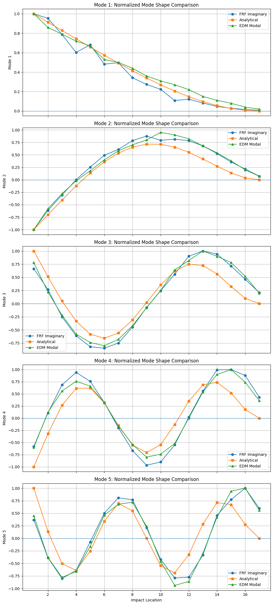

09 / Experimental modal analysis / Completed laboratory study
AE461 · Four-person laboratory team
Identifying cantilever vibration modes from impact-hammer tests
Our team used shaker excitation and roving impact-hammer measurements to identify cantilever-beam vibration behavior. The impact test connected frequency-response peaks to five natural frequencies and normalized mode shapes, with a comparison against analytical shapes and EDM Modal output.
- Team contribution
- Co-authored the team’s vibration-testing and modal-analysis report
- Tools
- Modal analysis · Impact hammer · Frequency response · EDM Modal
- Outcome
- Five impact-test frequencies agreed with EDM Modal within 0.4%

Identify resonances from frequency response
The impact-hammer study used a fixed accelerometer and 17 excitation locations. Resonances were identified from magnitude peaks, imaginary-component extrema, and supporting real-component and phase behavior in the frequency response functions.
The reported frequencies were 24.0, 154.5, 428.2, 840.4, and 1383.4 Hz. Extracting and normalizing imaginary amplitudes across the impact locations gave an experimental estimate of each mode shape.
Compare identification methods
FRF versus EDM Modal frequency differences: 0.29%, 0.39%, 0.20%, 0.25%, and 0.22%.
This agreement supported the manual selection of the five resonances. The mode-shape comparisons followed the same general trends, with stronger agreement at lower modes and more visible differences at higher modes.
The report also documents a separate shaker/stroboscope sequence at 3.75–213.1 Hz, with a 2.41% average difference from its prelab estimates. Those values belong to the shaker portion and are kept separate from the impact-test frequencies and the EDM comparison.
{kind=link}

Conclusion & contribution
The report concludes that the experiment met its objective of identifying natural frequencies and mode shapes. It attributes the small FRF/EDM differences to measurement noise, damping, and finite frequency resolution, and notes that the tip accelerometer affects the measured beam dynamics.
I am a coauthor of this team report. The source does not identify which member processed individual FRFs or performed particular measurements.